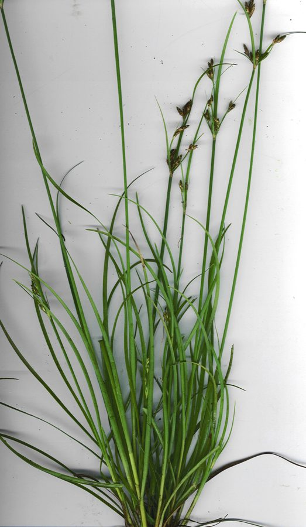

फोर्कड फिम्ब्री घासForked Fimbry
Fimbristylis dichotoma · Cyperaceae · FLR-0330

- Scientific name वैज्ञानिक नाम
- Fimbristylis dichotoma (L.) Vahl
- Family कुल
- Cyperaceae
- Hindi हिंदी
- फोर्कड फिम्ब्री घास
- Local names स्थानीय नाम
- forked fimbry, fimbry sedge, chinna motha, fimbry
- Status here यहाँ की स्थिति
- native
- Movement आवागमन
- Resident, here all year
- Known from कहाँ दर्ज
- Others have published records from the wider Awadh–Purvanchal plain, none yet from Basti–Ayodhya अवध–पूर्वांचल से दूसरों के प्रकाशित अभिलेख, बस्ती–अयोध्या से अभी नहीं
- IUCN IUCN
- not evaluated
- Review समीक्षा
- not yet reviewed
When to look कब देखें
Present all year. साल भर मौजूद।
Uses and possibilities उपयोग और संभावनाएँ
“Traditional medicine” means a documented traditional use, not a claim that it works. Nothing on this page is medical advice.
Drawn from the documented uses in the profile below, where each is labelled traditional, current or a research lead. All uses →
Tell it apart from इनसे अलग पहचानें
फोर्कड फिम्ब्री घास / Forked Fimbry
Fimbristylis dichotoma (L.) Vahl — Cyperaceae
फोर्कड फिम्ब्री घास — धान के खेतों, पोखरों के किनारों और गीली मिट्टी पर उगने वाली एक बहुत सामान्य छोटी मोथा-वर्गीय सेज (दलदली घास)। इसके तने पतले और गुच्छेदार होते हैं और पत्तियों की जड़ पर हल्के रोएं होते हैं। बरसात और जाड़ों में इसके सिरे पर कांटेदार छतरी जैसे भूरे-सुनहरे दानों के गुच्छे खिलते हैं जो सूखने पर छोटे सफेद-भूरे बीजों को बिखेरते हैं।
Quick Identification त्वरित पहचान
| Feature | Description |
|---|---|
| Habit | Densely tufted annual or short-lived perennial sedge 10–60 cm tall (Clarke 1893) |
| Culms | Slender, erect, compressed or angular, striate, smooth or slightly pubescent (Clarke 1893) |
| Leaves | Basal, linear, 5–25 cm long, 1.5–3.0 mm wide, flat, tapering to an acute tip (Duthie 1915) |
| Inflorescence | Compound or decompound umbellate anthela 3–8 cm across with unequal rays (Clarke 1893) |
| Spikelets | Ovate to oblong, 5–8 mm long, acute, reddish-brown or chestnut-coloured (Clarke 1893) |
| Fruit (Nutlet) | Biconvex, obovate, 1.0–1.2 mm long, ivory to pale brown, marked with 5–10 longitudinal ribs (Clarke 1893) |
Field tip: Look along muddy paddy bunds and wet ditch edges in autumn for tufted, narrow-leaved sedges topped by branched umbrella-like sprays of small, shiny chestnut-brown conical spikelets.
हिंदी — कैसे पहचानें: धान के खेतों में उगे पतले गुच्छेदार तने, सिरे पर छतरी जैसे फैले भूरे-चमकदार दानों के गुच्छे, और बारीक धारीदार सफेद-भूरे बीज।
Morphology शारीरिक संरचना
Biometrics (Clarke 1893; Duthie 1915):
| Measurement | Range |
|---|---|
| Culm height | 10–60 cm (Clarke 1893) |
| Leaf blade length | 5–25 cm (Duthie 1915) |
| Leaf blade width | 1.5–3.0 mm (Duthie 1915) |
| Inflorescence width | 3–8 cm (Clarke 1893) |
| Spikelet length | 5–8 mm (Clarke 1893) |
| Spikelet width | 2.5–3.5 mm (Clarke 1893) |
| Nutlet length | 1.0–1.2 mm (Clarke 1893) |
Culms and rhizomes: Culms densely clustered, erect, striate, slightly compressed, smooth, arising from short fibrous rootstocks. Rhizome absent or very short.
Leaves: Basal, shorter than or equalling the culms; sheaths brown or ferrugineous, often pubescent; ligule a dense fringe of short white hairs. Leaf blades flat or slightly channelled, linear, scaberulous on margins near the tip.
Inflorescence and spikelets: Inflorescence an open or congested, compound or decompound anthela; involucral bracts 2–4, leaf-like, the lowest often exceeding the inflorescence. Rays 3–8, slender, unequal. Spikelets solitary, terete, multi-flowered, spiral. Glumes ovate, obtuse to mucronulate, chestnut-brown with green keels. Style bifid, ciliate above; stamens 1–3. Nutlet biconvex, trabeculate with prominent longitudinal ribs and transverse bars.
हिंदी: तने पतले और धारीदार होते हैं। पत्तियों की जड़ पर भूरे रंग के खोल होते हैं। फूल की छतरी में कई छोटी शाखाएं होती हैं जिन पर भूरे रंग की अंडाकार बालियां लगती हैं।
Behaviour & Ecology व्यवहार एवं पारिस्थितिकी
Fimbristylis dichotoma is an extremely widespread and plastic hygrophilous sedge adapted to wet alluvial muds, seasonal flood margins, and irrigated agricultural soils. It thrives in open sunlight, quickly occupying muddy clearings where competition from perennial reeds is minimal.
It reproduces primarily through abundant production of lightweight, biconvex nutlets. The trabeculate surface of the nutlet traps tiny air bubbles, facilitating flotation along seasonal irrigation ditches and flood channels. Waterfowl and wading birds transport mud containing seeds on their feet and feathers, ensuring rapid colonization of newly formed puddles and rice paddies.
हिंदी: यह दलदली और गीली मिट्टी पर धूप में बहुत तेजी से पनपती है। इसके हल्के बीज पानी में तैरकर और पक्षियों के पंजों में चिपककर नए पोखरों और खेतों तक पहुँचते हैं।
Life Cycle / Phenology जीवन चक्र एवं ऋतुचक्र
| Period | Phenological Event |
|---|---|
| June–July | Seeds germinate abundantly in wet saturated soils with the onset of monsoon rains |
| August–September | Tillers branch quickly and compound umbellate flower heads emerge |
| October–December | Spikelets ripen from chestnut to dark brown, shedding ribbed ivory nutlets |
| January–May | Plants dry out in seasonal ditches; perennating tussocks persist in moist ditch beds |
Seeds remain viable within saturated mud seed banks for multiple seasons, germinating whenever water tables rise to saturate the topsoil.
हिंदी: बरसात की शुरुआत में बीज अंकुरित होते हैं। भादों-क्वांर में फूल आते हैं और जाड़ों में बीज पककर मिट्टी में गिर जाते हैं।
Associated Species / Interactions संबद्ध प्रजातियाँ एवं पारस्परिक क्रियाएं
- Waterfowl: Ducks and snipes forage for nutlets and aquatic insects around sedge clumps.
- Invertebrates: Sedge grasshoppers and mirid bugs feed on developing floral spikelets.
- Paddy Associates: Co-occurs along wet crop borders with Paddy, Nutgrass, and Asian Watergrass.
हिंदी: बत्तखें और जलपक्षी इसके बीजों को खाती हैं और धान के खेतों में यह मोथा के साथ मिलकर उगती है।
Pests and Diseases कीट एवं रोग
- False smut fungi occasionally infect individual spikelets during prolonged monsoon humidity.
- Sedge stem borer larvae bore into the bases of robust flowering culms.
- Leaf rust caused by Puccinia species causes tiny yellow-brown pustules on older basal leaves.
हिंदी: अधिक नमी वाले मौसम में कभी-कभी बालियों में कंडुआ रोग लग जाता है और तनों में कीड़े लग जाते हैं।
Agricultural / Human Relevance कृषि एवं मानवीय उपयोगिता
Agrarian and Weed Relevance:
- Paddy field weed. One of the most common and frequent native sedge weeds of transplanted and direct-seeded rice crops across South Asia, competing for nutrients if unweeded in early tillering.
- Soil protection. Forms a dense, fibrous mat that consolidates muddy field bunds and prevents water erosion along irrigation cuts.
- Minor grazing. Eaten by cattle and goats when young and succulent, though rejected after mature hard spikelets develop.
- Traditional medicine. Folk records describe root infusions used in traditional lore for soothing feverish heat and minor intestinal discomfort. This is a record of traditional use, not medical advice.
Today. It serves as an indicator species for shallow seasonal wetland hydrology and fertile alluvial topsoils in rice-wheat farming landscapes.
हिंदी: धान के खेतों में यह एक बहुत आम खरपतवार है जिसकी समय पर निराई जरूरी होती है। कोमल अवस्था में मवेशी इसे चर लेते हैं और इसकी जड़ें मेड़ों की मिट्टी को कटने से बचाती हैं।
Expected Locally स्थानीय संभावना एवं उपस्थिति
Not a field record. Written from published accounts for eastern Uttar Pradesh. No confirmed local sighting yet — if you have seen it, that is what the atlas needs.
अभी तक स्थानीय पुष्टि नहीं। यह विवरण प्रकाशित स्रोतों से है, किसी अवलोकन से नहीं।
Expected in eastern Uttar Pradesh across irrigated paddy fields, ditch banks, seasonal pond margins, wet village paths, and riverine silt flats across Basti, Siddharthnagar, and Ayodhya. GBIF holds published records from the wider Awadh–Purvanchal plain, none yet from Basti–Ayodhya. A first local record would be a dated photograph of the spikelets, inflorescence, or foliage, submitted with locality details through the project's About page.
Distribution भौगोलिक वितरण
Global range: Pantropical and warm temperate; native across Africa, southern Eurasia, South Asia, Southeast Asia, Australia, and the Americas.
In India: Abundantly distributed throughout all states from the plains up to 1,500 m in the outer Himalaya (Clarke 1893).
In Uttar Pradesh: Extremely common in rice fields, marshes, and moist open waste places across the Gangetic plain (Duthie 1915).
In Basti district / eastern UP: Expected along paddy furrows, irrigation canals, and damp alluvium.
हिंदी: यह पूरे भारत और विश्व के सभी गर्म और समशीतोष्ण नम मैदानों में बहुतायत से पाई जाती है।
Research Questions शोध प्रश्न
- How much does Fimbristylis dichotoma affect rice grain yield when unweeded during early crop tillering? / धान की रोपाई के शुरुआती दौर में इस घास की अनियंत्रित वृद्धि से उपज पर कितना असर पड़ता है?
- Which small wetland birds feed on its shed nutlets in harvested winter paddy fields? / धान कटाई के बाद खेत में गिरे इसके बीजों को कौन-से स्थानीय पक्षी चुगते हैं?
- What is the seed density of Fimbristylis in topsoils of organic versus conventional rice paddies? — Count emerging seedlings from calibrated soil core samples.
- How does soil salinity in usar depressions affect the germination and culm height of this sedge? — Test seed emergence across a gradient of electrical conductivity.
- Does the fibrous root network contribute significantly to reducing earthen bund erosion? — Measure shear strength of bund soil with and without sedge roots.
Similar Species समान प्रजातियाँ
| Species | How to tell apart | हिंदी |
|---|---|---|
| Nutgrass (Cyperus rotundus) | Produces aromatic underground tubers; spikelets distichous, darker reddish; style 3-cleft | मोथा, सुगंधित गांठें, 3-मुंहा वर्तिकाग्र |
| Slender Cyperus (Cyperus distans) | Taller sedge; spikelets linear, slender, widely spaced in loose spikes | पतला साइपरस, लंबी बिखरी बालियाँ |
| Annual Fimbry (Fimbristylis bisumbellata) | Smaller annual; spikelets smaller, paler; style with 2 stigmas; leaves narrower | बहुत छोटी सेज, हल्के रंग की बालियाँ |
Field rule: Tufted sedge with compressed culms, ciliate ligular fringe, decompound umbellate anthela of chestnut-brown ovate spikelets, and biconvex longitudinally ribbed ivory nutlets identifies Fimbristylis dichotoma.
Taxonomy & Classification वर्गिकी एवं वर्गीकरण
Original description. First described as Scirpus dichotomus by Carl Linnaeus in 1753 in Species Plantarum, vol. 1, p. 50. Transferred to Fimbristylis by Martin Vahl in 1805 in Enumeratio Plantarum, vol. 2, p. 287.
Subspecies. A highly variable pantropical species; numerous infraspecific taxa and forms have been proposed, with subsp. dichotoma representing the common Asian lowland taxon.
Family and order placement. Belongs to the sedge family Cyperaceae, subfamily Cyperoideae, tribe Abildgaardieae, in the order Poales.
Phylogenetic notes. Fimbristylis is a large tropical and subtropical genus of about three hundred species, distinguished from Cyperus by spirally arranged glumes and deciduous styles.
IUCN status rationale. Not evaluated in the master expansion list; it is one of the commonest and most geographically widespread wetland sedges on Earth.
हिंदी: इसका पहला वर्णन कार्ल लिनिअस ने 1753 में किया था और 1805 में वैज्ञानिक मार्टिन वाल ने इसे फिम्ब्रीस्टाइलिस वंश में स्थानांतरित किया।
Photo Gallery छायाचित्र दीर्घा
No photos yet — add field photos to media/species/forked_fimbry/ and run node scripts/sync_photos.js.
Photos needed आवश्यक फोटो
- [ ] Dense tuft growing in a wet paddy furrow or mudbank (गीले धान के खेत में उगी घास का गुच्छा)
- [ ] Decompound umbel showing chestnut-brown ovate spikelets (छतरी जैसी फैली भूरी चमकदार बालियाँ)
- [ ] Close-up of biconvex ribbed nutlet under magnification (धारीदार बीज का विस्तृत सूक्ष्म दृश्य)
References संदर्भ सूची
- Vahl, M. (1805). Enumeratio Plantarum, vol. 2, p. 287. Hauniae: N. Mölleri et filii.
- Linnaeus, C. (1753). Species Plantarum, vol. 1, p. 50. Holmiae: Laurentii Salvii.
- Clarke, C.B. (1893). Cyperaceae in Hooker, J.D. (ed.), The Flora of British India, vol. 6, pp. 635–636. L. Reeve & Co., London.
- Duthie, J.F. (1915). Flora of the Upper Gangetic Plain and of the Adjacent Siwalik and Sub-Himalayan Tracts, vol. 3, part 3, pp. 351–352. Government Printing, Calcutta.
- Kern, J.H. (1974). Cyperaceae in van Steenis, C.G.G.J. (ed.), Flora Malesiana, ser. 1, vol. 7, part 3, pp. 575–577. Noordhoff International Publishing, Leiden.
- GBIF Occurrence Data — Fimbristylis dichotoma (L.) Vahl, India (2025).
Source file: species/flora/grasses/forked_fimbry.md